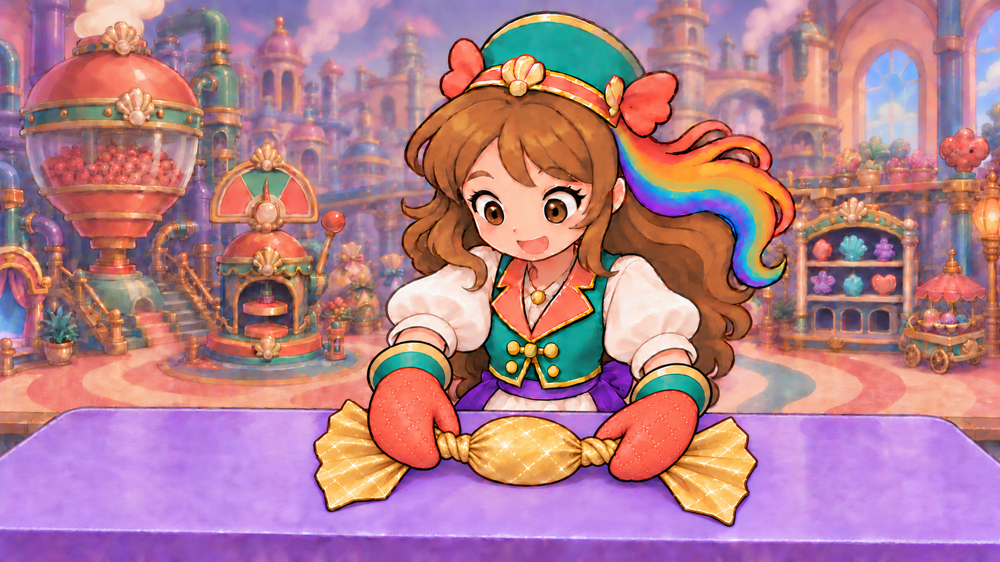
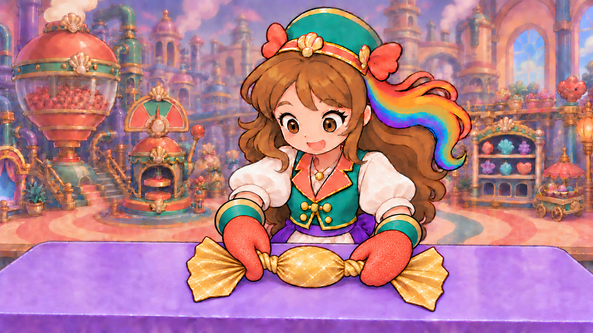
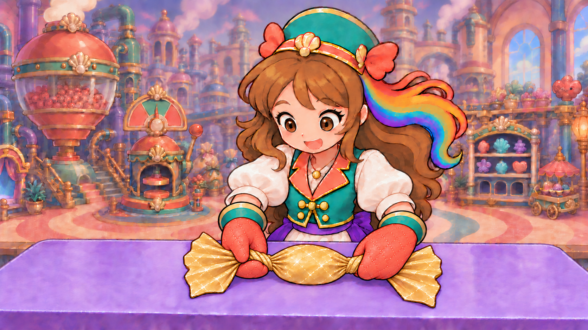
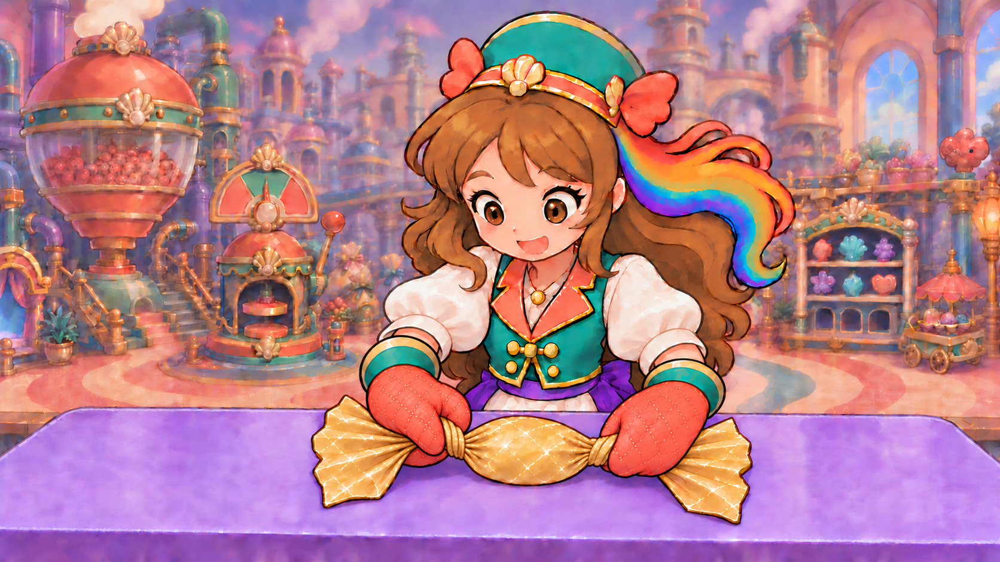
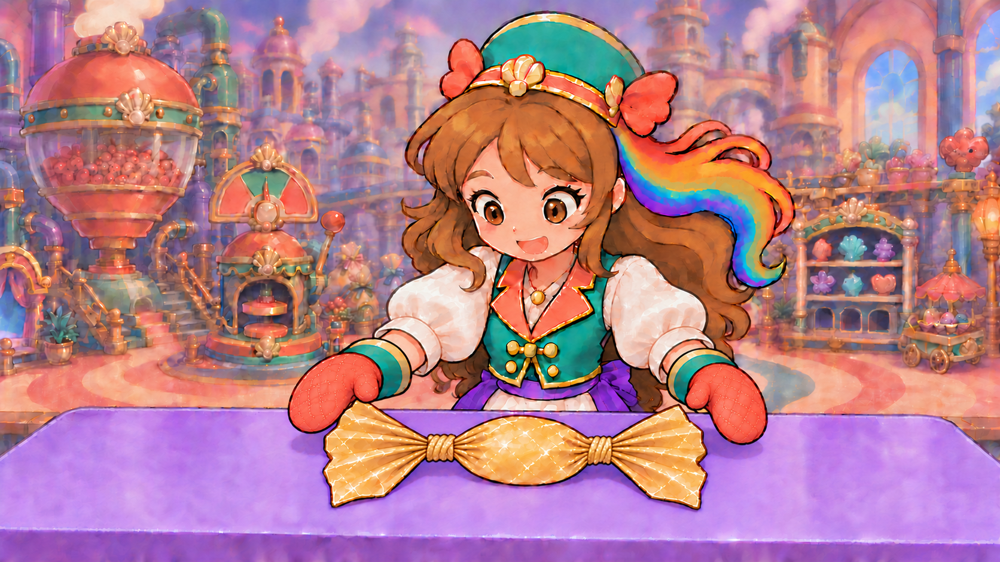
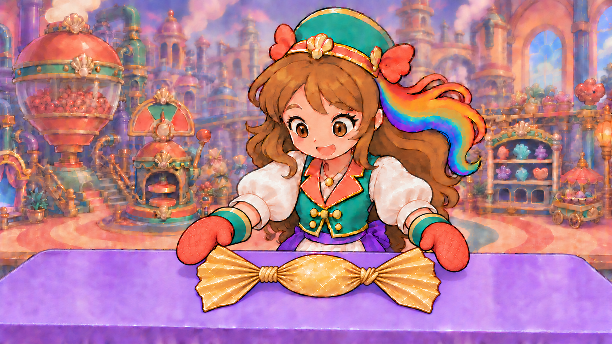
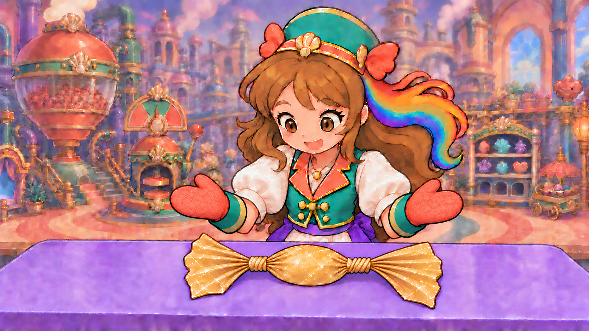
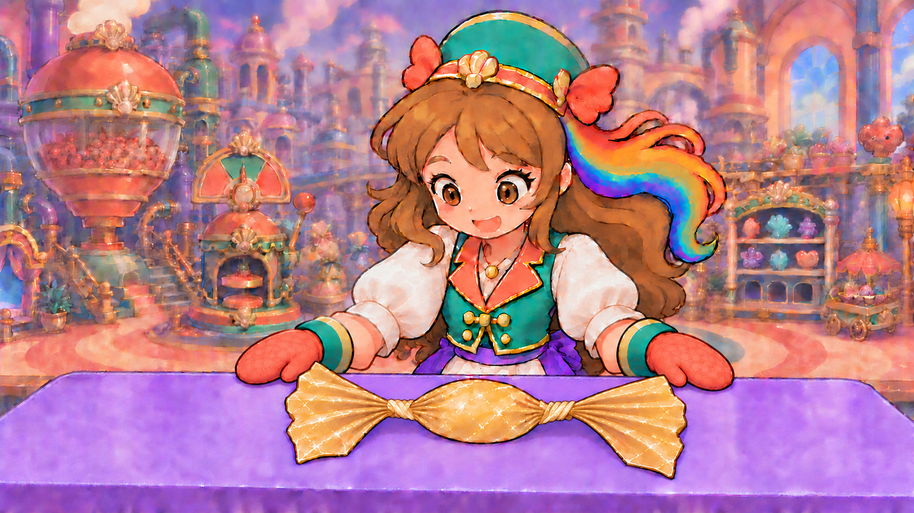

Do the hands support this gold wrapper?
Two improved endpoint stills reach a provisional4.5/5. The actual motion does not yet pass. Previous local component1.8/5 is rejected; current in-game WRAP remains2.8/5. Ten complete native candidates and123 individual opinions are preserved here. The full physical workflow and actual game/Opera training still need proof.
The final twist pose has two owned mitten contacts with distinct rolled orientations and opposite short paper winding. The final release leaves both hands clear, preserving one table-supported covered sweet and its broad gold fans. Each opinion is limited to visible source pixels. A still cannot establish wrist rotation, contact throughout motion or a completed action in gameplay. The inherited factory room remains4.4/5.
What is still required
Partial fold → opaque cover → gather → opposite wrist twists → supported release must occur continuously, with the same sweet and gold sheet, two cuff-owned hands, stable table support and no fan/cuff merging. Both the actual story job and Opera training must bind this authored family and expose every contact/state before their scores change. No new Comfy study was dispatched in this endpoint revision.
The current mounted widget is a different turquoise decorative wrapper. These gold-paper paintings are unbound replacement studies. Device, child, owner and comprehensive all-job acceptance remain open;294 primary Day One source opinions and other weak jobs/actions remain in the library.
Twist attempt1 · 4.1/5
REJECTED_OPPOSITE_WRIST_ROLL_NOT_SHOWN

Complete unaltered native ·1672×941 RGB ·Open original ·Individual source review ·Provenance ·Exact prompt| Individual item or relationship | Score/5 | Written evaluation |
|---|
| exactly two owned mittens | 4.6 | Two original coral mitten hands retain their own teal cuff/cream sleeve connections and stable quilted contours. |
| left neck contact | 4.5 | Left thumb and palm keep hold of the short left paper neck, with the fan extending outside. |
| right neck contact | 4.5 | Right thumb and palm hold the short right neck beside the covered oval. |
| opposite wrist pose change | 3.3 | Compared with the untwisted grip, the visible backs and inner thumb positions of both mittens remain almost the same. The paper closes, but a credible pair of opposite wrist rolls is not shown. |
| short twisted neck material | 4.4 | Compact helical gold folds replace lengthwise ridges; they read somewhat as neat thick rolls. Opposite winding is not clearly differentiated. |
| single continuous gold wrapper | 4.5 | Covered oval, short necks and two outward fans remain a continuous gold-paper object without a separate mat or added fastener. |
| outward fan ownership | 4.5 | Both fans remain outside their grips, attached to the central wrapper rather than to the cuffs. |
| opaque supported small oval | 4.5 | The same low covered oval is supported on the same table at comparable size and centre; no exposed red. |
| character table registration | 4.5 | Face, outfit, room, camera and table registration remain stable. |
| painted gold material | 4.5 | Gold body and fans retain painted value bands, crinkle accents and coherent contours. |
| inherited room graphics | 4.4 | The detailed inherited room remains a separate graphics priority. |
| whole twist endpoint | 4.1 | A pleasant closed wrapper is insufficient: the two hands have not visibly performed the required opposite wrist rolls. |
Required correction: Retain exact continuous covered gold wrapper, change the two mitten orientations to a visible opposite pair and differentiate short paper winding; do not treat instant closed paper as hand motion.
Native SHA-256 963de5baf9d138933db01ef554ecf6d9cbc602f6fc37396962ebad122e450c6d. Source only;motion/action/runtime/owner unassigned.
Twist attempt2 · 4.2/5
REJECTED_OPPOSITE_WRIST_ORIENTATION_STILL_AMBIGUOUS

Complete unaltered native ·1672×941 RGB ·Open original ·Individual source review ·Provenance ·Exact prompt| Individual item or relationship | Score/5 | Written evaluation |
|---|
| exactly two owned mittens | 4.6 | Both existing mitten hands remain joined to their own cuffs and sleeves. |
| left neck contact | 4.5 | The left short neck remains pinched with the fan outside the hand. |
| right neck contact | 4.5 | The right short neck remains held beside the covered oval. |
| opposite wrist pose change | 3.6 | The left mitten narrows and extends downward, but both visible quilted backs and upper inner thumb lobes still resemble the stationary grip. The prescribed below-neck left thumb is not clearly shown. |
| short twisted neck material | 4.4 | The same compact rolled gold folds remain; their opposite winding is still subtle and neatly tubular. |
| single continuous gold wrapper | 4.5 | Body, necks and outward fans remain a continuous sheet without extra bands or mat. |
| outward fan ownership | 4.5 | Both loose fans belong to their necks, outside the grips and away from the cuffs. |
| opaque supported small oval | 4.5 | The single opaque low gold oval remains supported at the same table position. |
| character table registration | 4.5 | Character identity, clothing, room and table stay coherent. |
| painted gold material | 4.5 | The gold wrapper preserves painted value bands and restrained crinkles. |
| inherited room graphics | 4.4 | The unchanged detailed room remains a separate source priority. |
| whole twist endpoint | 4.2 | This still improves the left contour but has not earned the required opposite wrist pose. |
Required correction: Show a clearly palm-up left mitten under its neck and palm-down right mitten over its neck. Do not award opposite wrist motion from tiny contour differences.
Native SHA-256 c3a7b4cc71c8630cc0fe1772b92af3702a3b9858234e01610408eae2094db076. Source only;motion/action/runtime/owner unassigned.
Twist attempt3 · 4.4/5
REJECTED_RIGHT_WRIST_ROLL_TOO_SMALL

Complete unaltered native ·1672×941 RGB ·Open original ·Individual source review ·Provenance ·Exact prompt| Individual item or relationship | Score/5 | Written evaluation |
|---|
| exactly two owned mittens | 4.6 | Two coral gloves each retain one thumb lobe and their original cuff/sleeve connection. |
| left neck contact | 4.5 | The left small thumb lobe is now visibly below the short neck, opposed to the upper glove surface; continuous gold passes through this owned pinch. |
| right neck contact | 4.5 | The right upper inner thumb and lower palm retain the short-neck contact. |
| opposite wrist pose change | 4.2 | The left contact has visibly rolled to the underside. The right glove and cuff change only slightly from the original grip, so the required second opposite roll remains weak. |
| short twisted neck material | 4.5 | Short soft diagonal paper folds wind in visibly opposite directions, without separate bands or cords. |
| single continuous gold wrapper | 4.5 | The same gold oval, narrowed necks and fans remain one continuous sheet. |
| outward fan ownership | 4.5 | Both loose gold fans remain outside their own short grips and are not cuff wings. |
| opaque supported small oval | 4.5 | One covered low oval stays supported at its same table centre and comparable dimensions. |
| character table registration | 4.5 | Identity, outfit, table and room remain stable. |
| painted gold material | 4.5 | Painted gold folds and contours remain coherent across body, necks and fans. |
| inherited room graphics | 4.4 | The inherited detailed room remains separately weak. |
| whole twist endpoint | 4.4 | This is a useful improvement in physical contact and winding, but the right wrist has not visibly earned the opposite-roll requirement. |
Required correction: Retain the achieved opposite thumb-side contacts and single gold sheet. The right hand needs a clear over-neck rolled pose rather than almost the initial downward-pointing glove.
Native SHA-256 e8de1c0c141259a2fa4e3962cdcefcf6147cc01dc09070587b05805d6d8de947. Source only;motion/action/runtime/owner unassigned.
Twist attempt4 · 3.9/5
REJECTED_WRONG_HAND_CHANGED_LEFT_EXTRA_LOBE_RIGHT_UNCHANGED

Complete unaltered native ·1672×941 RGB ·Open original ·Individual source review ·Provenance ·Exact prompt| Individual item or relationship | Score/5 | Written evaluation |
|---|
| exactly two owned mittens | 3.6 | Two sleeve connections remain, but the left glove now presents an upper inner thumb, main rounded tip and extra lower coral lobe beneath the neck. Its single-thumb topology is unclear. |
| left neck contact | 4.0 | The left contact has been changed unnecessarily and the extra underside lobe makes the pinch hard to parse. |
| right neck contact | 4.5 | The right neck stays held by the original right mitten. |
| opposite wrist pose change | 3.5 | The requested right-wrist roll was not performed; the left hand changed instead. |
| short twisted neck material | 4.3 | The left folds have become mostly vertical wrapped ridges; opposite winding is less clear than A3. |
| single continuous gold wrapper | 4.5 | The gold body, necks and fans remain one continuous object. |
| outward fan ownership | 4.5 | Both fans remain outside their own necks without cuff attachment. |
| opaque supported small oval | 4.5 | The same covered low oval remains table-supported. |
| character table registration | 4.5 | Scene and character identity remain stable. |
| painted gold material | 4.5 | The painted gold family is retained. |
| inherited room graphics | 4.4 | The unchanged room remains a separate graphics priority. |
| whole twist endpoint | 3.9 | The correction edited the wrong hand and weakened the previously readable left-hand topology. |
Required correction: Restore the prior accepted left contact and change only the glove on the viewer-right side of the image under the rainbow hair. The prior instruction changed the wrong hand and added a confusing third coral lobe.
Native SHA-256 ff2e719b8c32585baf0890e255eaca77df89d42770965d774b0286338fc49110. Source only;motion/action/runtime/owner unassigned.
Twist attempt5 · 4.5/5
PROVISIONAL_TWIST_ENDPOINT_SOURCE4_5_NOT_MOTION_OR_RUNTIME
 Complete unaltered native ·1672×941 RGB ·Open original ·Individual source review ·Provenance ·Exact prompt
Complete unaltered native ·1672×941 RGB ·Open original ·Individual source review ·Provenance ·Exact prompt| Individual item or relationship | Score/5 | Written evaluation |
|---|
| exactly two owned mittens | 4.6 | Exactly two rounded coral mitten hands remain connected to their own teal cuffs and cream sleeves; each has one thumb lobe. |
| left neck contact | 4.5 | The small left thumb is below the short neck and opposes the upper glove surface; the gold paper passes through that pinch to the outer fan. |
| right neck contact | 4.5 | The right upper thumb and rolled broad lower glove surface oppose over the short gold neck; the neck emerges beside both body and fan. |
| opposed endpoint pose | 4.5 | Relative to the initial grip, the left thumb has rolled below its neck while the right glove now lies diagonally across/over its neck, with a clearly changed cuff/mitten orientation. This grades the visible endpoint pair only; an actual two-wrist rotation trajectory remains unreviewed. |
| short twisted neck material | 4.5 | Compact soft gold-paper folds wind oppositely at the short necks, with no separate string, bands or knots. The right pinch partly occludes its winding, which must be checked through motion/release. |
| single continuous gold wrapper | 4.5 | One covered oval joins continuously through both narrow necks into its two loose fans, without an added mat or fastener. |
| outward fan ownership | 4.5 | Both gold fan ends remain outside their grips and belong to the sweet, with no paper-to-cuff attachment. |
| opaque supported small oval | 4.5 | The same single covered low oval remains supported at the original table centre and comparable size; no exposed red or replacement sweet. |
| character table registration | 4.5 | Face, hair, outfit, camera, factory room and lavender table stay coherent with the preceding scene. |
| painted gold material | 4.5 | Body, necks and fans retain the same broad painted gold bands, contours and restrained crinkles. |
| inherited room graphics | 4.4 | The unchanged detailed factory room remains a separate weak source priority. |
| whole twist endpoint | 4.5 | The corrected endpoint now supports a source-level pair of owned opposite contacts on this gold wrapper. It does not prove the intervening wrist rolls, folding chronology, released hold, actual game/training or owner acceptance. |
Native SHA-256 33a0c2a7d4ef4550ec537ed65257fde7f06b53694ab8bad6315b9d91ffc8b38e. Source only;motion/action/runtime/owner unassigned.
Release attempt1 · 4.2/5
REJECTED_RELEASE_RIGHT_FAN_SHRINKS_NECKS_BECOME_UNIFORM_ROPE_LOOPS

Complete unaltered native ·1672×941 RGB ·Open original ·Individual source review ·Provenance ·Exact prompt| Individual item or relationship | Score/5 | Written evaluation |
|---|
| exactly two owned mittens | 4.6 | Both released coral mitten hands remain connected to their own teal cuffs and naturally bent sleeves. |
| left disengaged contact | 4.5 | The left glove withdraws upward/outward, leaving a narrow visible gap from the left fan and no neck pinch. |
| right disengaged contact | 4.5 | The right glove withdraws above/outside its fan with visible clearance from the gold paper. |
| supported released rest | 4.5 | The single covered oval remains low and supported on the table after both hands release. |
| short twisted neck material | 4.0 | The newly revealed necks become regular multiple gold rope-like loops/collars. The previous soft opposite paper winding is not maintained clearly. |
| single continuous gold wrapper | 4.4 | Body, necks and fans remain connected, but the regular neck collars weaken the flexible paper reading. |
| fan geometry continuity | 4.0 | The right fan's tip retracts substantially and its spread narrows compared with the preceding twist endpoint. A release should not shrink or replace this same paper end. |
| opaque supported small oval | 4.5 | The central oval remains comparable in size and position, fully opaque with no exposed red. |
| character table registration | 4.5 | Face, clothing, room, table and camera remain coherent. |
| painted gold material | 4.3 | Body and fans retain painted gold, but the necks resemble a separate neat rope material. |
| inherited room graphics | 4.4 | The unchanged detailed room remains separately weak. |
| whole released endpoint | 4.2 | Both hands let go correctly, but the same wrapper's right-fan geometry and paper neck material drift. |
Required correction: Preserve the achieved released hands, but restore the preceding right fan's larger outline/extent and soft opposite paper winding. Release may not shrink a fan or replace gold paper with uniform rope collars.
Native SHA-256 4e9f50533a91699f020491df1fcd48e36bc42f4a6dbda6e045e8886b1629cd09. Source only;motion/action/runtime/owner unassigned.
Release attempt2 · 4.3/5
REJECTED_RELEASE_FAN_EXTENT_STILL_DRIFTS_PAPER_NECKS_TOO_REGULAR

Complete unaltered native ·1672×941 RGB ·Open original ·Individual source review ·Provenance ·Exact prompt| Individual item or relationship | Score/5 | Written evaluation |
|---|
| exactly two owned mittens | 4.6 | The two withdrawn gloves remain sleeve-owned with one thumb each. |
| left disengaged contact | 4.5 | The left glove remains clear of its short neck and fan. |
| right disengaged contact | 4.5 | The right glove remains clear of the wrapper above its outer fan. |
| supported released rest | 4.5 | The covered sweet stays supported on the tabletop after release. |
| short twisted neck material | 4.2 | Some diagonal winding improves on the right, but the left still reads as uniform gold rope loops and the pair does not clearly preserve the preceding opposite fold directions. |
| single continuous gold wrapper | 4.4 | The gold surfaces stay connected, with the neck material still too collar-like. |
| fan geometry continuity | 4.2 | The right fan broadens somewhat but its outer tip and spread still fall short of the preceding endpoint. The right paper end remains a different size after release. |
| opaque supported small oval | 4.5 | The single covered centre remains in place with comparable low oval volume. |
| character table registration | 4.5 | Character, room and table remain stable. |
| painted gold material | 4.4 | Most gold surfaces match; the necks remain too regular and rope-like. |
| inherited room graphics | 4.4 | The inherited room is still separately weak. |
| whole released endpoint | 4.3 | The released hands work, but wrapper conservation/material continuity is not yet at the requested source floor. |
Required correction: Use the exact provisional twist endpoint as the whole-scene/wrapper target, and the achieved released hands as a pose reference only. Restore actual original fan dimensions and flexible paper necks rather than approximating coordinates.
Native SHA-256 ce067a51ffc267adf119f02eea16684a61e66d30ebc06c767f7b25e335e222d1. Source only;motion/action/runtime/owner unassigned.
Release attempt3 · 4.3/5
REJECTED_RELEASE_REGULAR_ROPE_COLLARS_AND_RAISED_DISPLAY_POSE

Complete unaltered native ·1672×941 RGB ·Open original ·Individual source review ·Provenance ·Exact prompt| Individual item or relationship | Score/5 | Written evaluation |
|---|
| exactly two owned mittens | 4.6 | Both original gloves are attached to bent owned forearms with one thumb each. |
| left disengaged contact | 4.5 | The left hand is fully clear of the paper and neck. |
| right disengaged contact | 4.5 | The right hand is fully clear of its fan and neck. |
| supported released rest | 4.5 | The one covered sweet remains low on the tabletop after release. |
| quiet released hand rest | 4.2 | The new symmetric raised palm-display reads as a larger flourish rather than the directed small quiet withdrawal and settle. |
| short twisted neck material | 4.1 | Both necks are five regular rope-like gold loops/collars, rather than the preceding compact irregular thin-paper folds. Opposite winding is not clear enough. |
| single continuous gold wrapper | 4.4 | The gold object remains connected, but its rope-like collars still weaken single-sheet material continuity. |
| fan geometry continuity | 4.5 | The broad original right fan spread and outer tip have been restored; both fans now match the preceding wrapper far better. |
| opaque supported small oval | 4.5 | Central oval volume and tabletop centre remain stable and opaque. |
| character table registration | 4.5 | Face, costume, factory room and table remain stable. |
| painted gold material | 4.3 | Body and fans match, but regular neck collars read as a different material. |
| inherited room graphics | 4.4 | The inherited detailed room remains separately weak. |
| whole released endpoint | 4.3 | Fan continuity is repaired; neck material and the quiet settled-hand pose still require correction. |
Required correction: Preserve the restored original fans and supported oval, soften the revealed necks into irregular opposite paper twists, and lower/relax the hands from the symmetric palm-display pose.
Native SHA-256 366f741f933546d0d88e6ac773d9e91f66b4442baea0165605aa9b3ba1697193. Source only;motion/action/runtime/owner unassigned.
Release attempt4 · 4.4/5
REJECTED_RELEASE_GLOVES_TOUCH_UPPER_FAN_EDGES

Complete unaltered native ·1672×941 RGB ·Open original ·Individual source review ·Provenance ·Exact prompt| Individual item or relationship | Score/5 | Written evaluation |
|---|
| exactly two owned mittens | 4.6 | Exactly two attached rounded mitten hands, one thumb each, remain naturally connected to the cuffs and sleeves. |
| left disengaged contact | 4.1 | The left inner glove/thumb contour meets the upper left fan corner. The hand has left the neck but complete disengagement from all paper is not clear. |
| right disengaged contact | 4.1 | The right thumb sits against the upper right fan edge. A supported full release requires an actual visible gap. |
| supported released rest | 4.5 | The same covered oval remains table-supported and both necks remain closed. |
| quiet released hand rest | 4.5 | Both hands are lowered into a quiet compact table-side rest without the previous raised flourish. |
| short twisted neck material | 4.5 | The necks now read as broad irregular compressed thin-paper folds, with opposite diagonal winding and no separate cord collars. |
| single continuous gold wrapper | 4.5 | Gold body, short twists and broad fans are one continuous flexible paper sheet. |
| fan geometry continuity | 4.5 | Both original broad fan extents and positions are retained. |
| opaque supported small oval | 4.5 | One opaque low covered oval remains at the same table centre and comparable volume. |
| character table registration | 4.5 | Character face/costume identity, full factory composition and table framing remain coherent; a somewhat bolder painted finish still requires owner review. |
| painted gold material | 4.5 | Gold necks now share the painted thin-paper material of body and fans. |
| inherited room graphics | 4.4 | The detailed inherited room remains a separate source priority. |
| whole released endpoint | 4.4 | Paper and quiet rest improve, but both gloves still touch their fan edges; full release is not yet established. |
Required correction: Keep the improved soft opposite paper twists, full fan geometry and quiet lowered hands. Move each existing hand slightly outward/upward so there is a visible purple gap from its fan; do not move the wrapper.
Native SHA-256 d0f31421fa6e3a9d20ed63d67fb2c7ba09fcaa1d2274824ef02a1192a4e34961. Source only;motion/action/runtime/owner unassigned.
Release attempt5 · 4.5/5
PROVISIONAL_RELEASE_ENDPOINT_SOURCE4_5_NOT_MOTION_OR_RUNTIME
 Complete unaltered native ·1672×941 RGB ·Open original ·Individual source review ·Provenance ·Exact prompt
Complete unaltered native ·1672×941 RGB ·Open original ·Individual source review ·Provenance ·Exact prompt| Individual item or relationship | Score/5 | Written evaluation |
|---|
| exactly two owned mittens | 4.6 | Exactly two relaxed rounded coral mittens remain joined to their original teal cuffs and naturally bent sleeves; one thumb each. |
| left disengaged contact | 4.5 | The left glove now sits outward of the fan with a visible purple gap at its inner edge; it grips no neck or fan. |
| right disengaged contact | 4.5 | The right glove and thumb are visibly clear of the right fan and neck, with a readable purple gap. |
| supported released rest | 4.5 | After both hands let go, the one small covered oval remains low and supported on the same table. |
| quiet released hand rest | 4.5 | The hands settle quietly beside/behind the fans without an enlarged raised flourish or extra gesture. |
| short twisted neck material | 4.5 | Both short necks remain irregular compressed sections of the same thin gold paper, with opposite diagonal winding rather than separate uniform rope collars. |
| single continuous gold wrapper | 4.5 | One gold sheet runs from the covered oval through both short twists into its two outward fans; no extra fastener or mat. |
| fan geometry continuity | 4.5 | The broad fan extents and outer tips remain comparable to the provisional twist endpoint and restored release geometry. This static comparison does not prove stable fans through animation. |
| opaque supported small oval | 4.5 | The opaque low central oval conserves its centre and comparable size; no exposed red or extra sweet. |
| character table registration | 4.5 | Character identity, costume, full scene/table framing and painted storybook family remain coherent, with the bolder painted finish still subject to owner/context review. |
| painted gold material | 4.5 | Body, necks and fans share broad painted satin-gold planes, restrained crinkles and coherent contours. |
| inherited room graphics | 4.4 | The unchanged detailed factory room remains a separate weak source priority. |
| whole released endpoint | 4.5 | This visible endpoint supports both owned hands disengaging from the same supported gold wrapper. It does not prove the fold-to-release trajectory, actual game/training fit, device/child/owner acceptance or integration. |
Native SHA-256 a7b842cd59cba9f6e023ec535c8188a41d7c7b18f176c4f62db399939a2c8ccb. Source only;motion/action/runtime/owner unassigned.